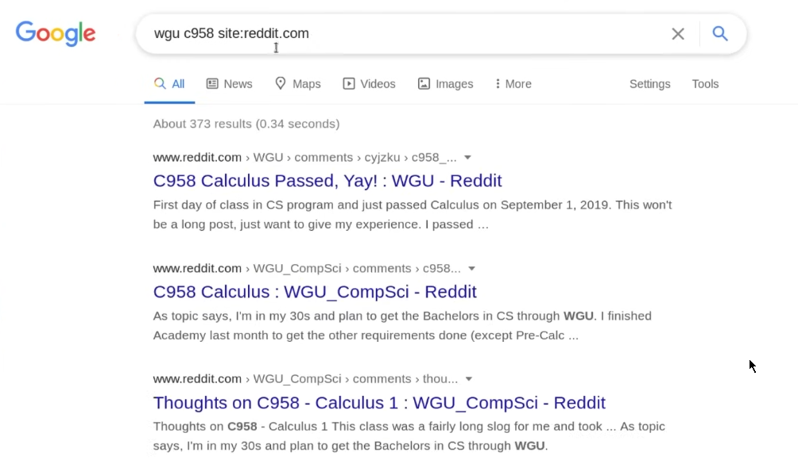

in order to search across a particular website:

to return multiple keywords:

to return specific keyword in a particular order:

to return either of the keywords:

wildcard operator - fills the spot with relevant research:

to return a particular filetype:

to return with a certain keyword ommited:

to return a certain keyword inside the webpage:

to return a certain keyword inside the url:

to return a certain keyword inside the title: